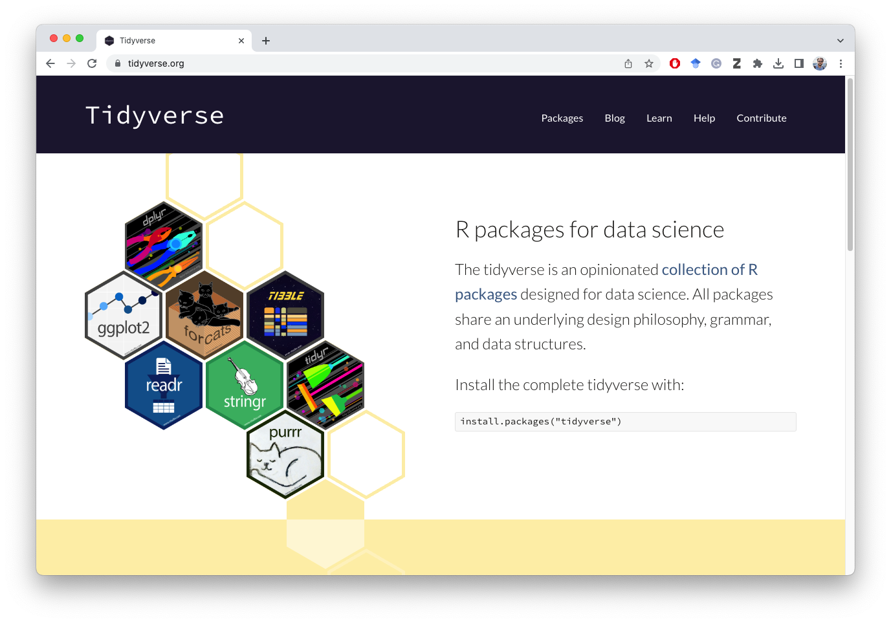
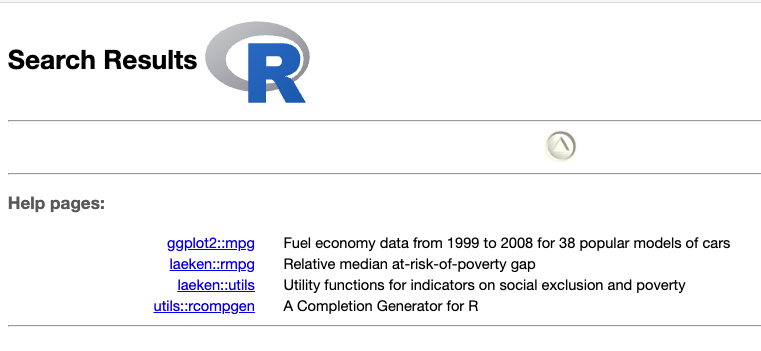

install.packages("tidyverse")8 Tidy Data Analysis
In this section we introduce the tidy-way of data analysis. This is different from the base-R way of subsetting and manipulating data, which haven’t covered thoroughly anyway. Because much of the data analysis will be performed following the tidyver-approach, we briefly introduced the base-R way of working with data frames.
8.1 What’s in tidyverse
tidyverse is a collection of R packages for data science.  You can install tidyverse with
or use the Rstudio visual interface.
Once installed, you can load it like any other R packages
library(tidyverse)The list of packages in this collection along with that they do is summarized below
| Package | What it does |
|---|---|
| dplyr | the flagship package which provides grammar of data manipulation with a consistet set of verbs |
| ggplot2 | for creating beautiful graphics based on Grammar of Graphics |
| tidyr | for tyding your data set |
| readr | reading rectangular data |
| forcats | for working with factor data types |
| stringr | makes working with strings/characters easier |
| tibble | a modern data-frame evolved from the base data.frame |
| purr | enhances functional programming in R |
8.2 Data transformation
dplyr verbs
| Verb | What it does |
|---|---|
filter() |
subsetting rows/observations in a data frame |
select() |
selects subset of columns by their names |
mutate() |
creates new columns/variables off of existing columns/variables |
arrange() |
reorders rows by column/variable |
summarize() |
creates summary statistics |
group_by() |
splits data by by group for processing/summarizing/manipulating |
8.3 Data
library(tidyverse)── Attaching packages ─────────────────────────────────────── tidyverse 1.3.1 ──✔ ggplot2 3.3.6 ✔ purrr 0.3.4
✔ tibble 3.1.7 ✔ dplyr 1.0.9
✔ tidyr 1.2.0 ✔ stringr 1.4.0
✔ readr 2.1.2 ✔ forcats 0.5.1── Conflicts ────────────────────────────────────────── tidyverse_conflicts() ──
✖ dplyr::filter() masks stats::filter()
✖ dplyr::lag() masks stats::lag()mpg %>% glimpse()Rows: 234
Columns: 11
$ manufacturer <chr> "audi", "audi", "audi", "audi", "audi", "audi", "audi", "…
$ model <chr> "a4", "a4", "a4", "a4", "a4", "a4", "a4", "a4 quattro", "…
$ displ <dbl> 1.8, 1.8, 2.0, 2.0, 2.8, 2.8, 3.1, 1.8, 1.8, 2.0, 2.0, 2.…
$ year <int> 1999, 1999, 2008, 2008, 1999, 1999, 2008, 1999, 1999, 200…
$ cyl <int> 4, 4, 4, 4, 6, 6, 6, 4, 4, 4, 4, 6, 6, 6, 6, 6, 6, 8, 8, …
$ trans <chr> "auto(l5)", "manual(m5)", "manual(m6)", "auto(av)", "auto…
$ drv <chr> "f", "f", "f", "f", "f", "f", "f", "4", "4", "4", "4", "4…
$ cty <int> 18, 21, 20, 21, 16, 18, 18, 18, 16, 20, 19, 15, 17, 17, 1…
$ hwy <int> 29, 29, 31, 30, 26, 26, 27, 26, 25, 28, 27, 25, 25, 25, 2…
$ fl <chr> "p", "p", "p", "p", "p", "p", "p", "p", "p", "p", "p", "p…
$ class <chr> "compact", "compact", "compact", "compact", "compact", "c…Now, if you haven’t loaded tidyverse library on the console, or interactively on the Rmd file, then ? mpg will show an error > ?mpg No documentation for ‘mpg’ in specified packages and libraries: you could try ‘??mpg’
The error message suggests you to try ?? mpg instead. Note, the double question mark. This will search the entire R ecosystem currently available in your system including the libraries that are installed but not loaded.
When running ?? mpg on the console, we get this

Now we see from the image above that the mpg is in the ggplot2 library. Please note how do I know that it is in the ggplot2 library. Becasue it is written as ggplot2::mpg this indicates that the mpg object is in the ggplot2 library.
You can call the mpg object if you either loaded tidyverse pckage or the ggplot2 packahge using either library(tidyverse) or library(ggolot2) on the notebook or on the console.
If you do not want to load the library, yet want to use the mpg data set, you have to call it by ggplot2::mpg. Likewise, if you run ?ggplot2::mpg, the data profile will be shown.
?ggplot2::mpgWhen you execute the above, you will see under the Help tab, the details about the mpg data set. This is the same data set as the mtcars but with some enhancements.
8.4 Basic Usage of dplyr verbs
First, lets start with the mpg data set available in ggplot2 package.
mpg %>% glimpse()Rows: 234
Columns: 11
$ manufacturer <chr> "audi", "audi", "audi", "audi", "audi", "audi", "audi", "…
$ model <chr> "a4", "a4", "a4", "a4", "a4", "a4", "a4", "a4 quattro", "…
$ displ <dbl> 1.8, 1.8, 2.0, 2.0, 2.8, 2.8, 3.1, 1.8, 1.8, 2.0, 2.0, 2.…
$ year <int> 1999, 1999, 2008, 2008, 1999, 1999, 2008, 1999, 1999, 200…
$ cyl <int> 4, 4, 4, 4, 6, 6, 6, 4, 4, 4, 4, 6, 6, 6, 6, 6, 6, 8, 8, …
$ trans <chr> "auto(l5)", "manual(m5)", "manual(m6)", "auto(av)", "auto…
$ drv <chr> "f", "f", "f", "f", "f", "f", "f", "4", "4", "4", "4", "4…
$ cty <int> 18, 21, 20, 21, 16, 18, 18, 18, 16, 20, 19, 15, 17, 17, 1…
$ hwy <int> 29, 29, 31, 30, 26, 26, 27, 26, 25, 28, 27, 25, 25, 25, 2…
$ fl <chr> "p", "p", "p", "p", "p", "p", "p", "p", "p", "p", "p", "p…
$ class <chr> "compact", "compact", "compact", "compact", "compact", "c…There are 234 rows and 11 columns or variables in the data set. This also confirms with the output produced when running glimpse().
8.5 Filter rows with filter()
8.5.1 Filtering based on one condition
Let us filter all the rows of the data where the vehicle is a front-wheel drive. The variable is drv for drivetrain. First, let us see a simple table showing the values in the data and their frequencies
table(mpg$drv)
4 f r
103 106 25 Alternatively, we can alternatively run
mpg %>%
select(drv) %>%
table()drv
4 f r
103 106 25 There are three types of vehicles, four-wheel drive (represented by drv = 4), front-wheel drive (drv = f) and rear-wheel drive (drv = r).
To select only the front-wheel drive vehicles, we use filter() function with the condition that the drv == 'f'. Notice that the variable name drv doesn’t need to be wrapped with quotation, but the actual value of the variable must be put within quotation. Either single or double quotation would work.
mpg %>%
filter(drv == 'f')# A tibble: 106 × 11
manufacturer model displ year cyl trans drv cty hwy fl class
<chr> <chr> <dbl> <int> <int> <chr> <chr> <int> <int> <chr> <chr>
1 audi a4 1.8 1999 4 auto(l5) f 18 29 p comp…
2 audi a4 1.8 1999 4 manual(m… f 21 29 p comp…
3 audi a4 2 2008 4 manual(m… f 20 31 p comp…
4 audi a4 2 2008 4 auto(av) f 21 30 p comp…
5 audi a4 2.8 1999 6 auto(l5) f 16 26 p comp…
6 audi a4 2.8 1999 6 manual(m… f 18 26 p comp…
7 audi a4 3.1 2008 6 auto(av) f 18 27 p comp…
8 chevrolet malibu 2.4 1999 4 auto(l4) f 19 27 r mids…
9 chevrolet malibu 2.4 2008 4 auto(l4) f 22 30 r mids…
10 chevrolet malibu 3.1 1999 6 auto(l4) f 18 26 r mids…
# … with 96 more rows8.5.2 Filtering based on multiple conditions
Suppose now that we want to filter vehicles that are front-wheel drive and has a 5 cylinders
table(mpg$cyl)
4 5 6 8
81 4 79 70 mpg %>%
filter(drv == 'f', cyl == 5)# A tibble: 4 × 11
manufacturer model displ year cyl trans drv cty hwy fl class
<chr> <chr> <dbl> <int> <int> <chr> <chr> <int> <int> <chr> <chr>
1 volkswagen jetta 2.5 2008 5 auto(… f 21 29 r comp…
2 volkswagen jetta 2.5 2008 5 manua… f 21 29 r comp…
3 volkswagen new beetle 2.5 2008 5 manua… f 20 28 r subc…
4 volkswagen new beetle 2.5 2008 5 auto(… f 20 29 r subc…How about the vehicles that are either front-wheel drive or with 5 cylinders?
mpg %>%
filter(drv == 'f' | cyl == 5)# A tibble: 106 × 11
manufacturer model displ year cyl trans drv cty hwy fl class
<chr> <chr> <dbl> <int> <int> <chr> <chr> <int> <int> <chr> <chr>
1 audi a4 1.8 1999 4 auto(l5) f 18 29 p comp…
2 audi a4 1.8 1999 4 manual(m… f 21 29 p comp…
3 audi a4 2 2008 4 manual(m… f 20 31 p comp…
4 audi a4 2 2008 4 auto(av) f 21 30 p comp…
5 audi a4 2.8 1999 6 auto(l5) f 16 26 p comp…
6 audi a4 2.8 1999 6 manual(m… f 18 26 p comp…
7 audi a4 3.1 2008 6 auto(av) f 18 27 p comp…
8 chevrolet malibu 2.4 1999 4 auto(l4) f 19 27 r mids…
9 chevrolet malibu 2.4 2008 4 auto(l4) f 22 30 r mids…
10 chevrolet malibu 3.1 1999 6 auto(l4) f 18 26 r mids…
# … with 96 more rowsHow about either front wheel drive and city fuel efficiency of 20 or 24 miles per gallon?
First try to filter vehicles whose city mileage is 20 or 24 mpg
mpg %>%
filter(cty == c(24, 20)) %>%
select(cty) %>%
table()cty
20 24
6 3